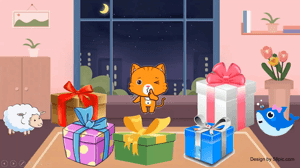
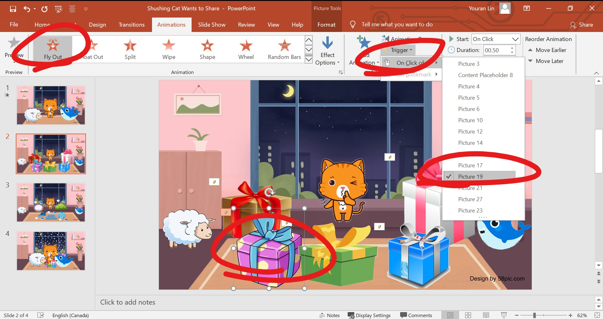
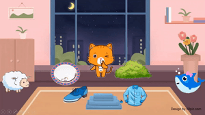
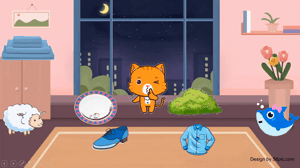
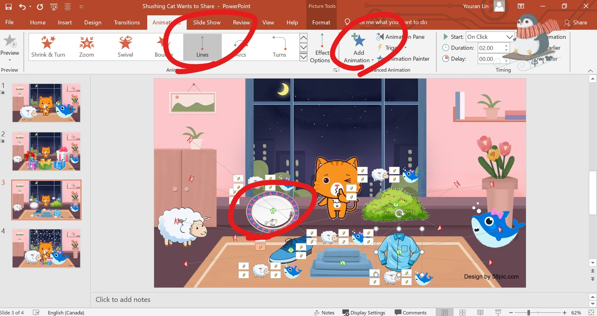

。Blog
<< 2020‧11‧13 |【Clinic】Shushing Cat Wants to Share: /sh/ in Words
I developed a PowerPoint activity for children with speech sound disorders to work on /sh/ words. The treatment plan was developed in conjunction with my clinical partner, Keely Morrow, BA (Hons), MSc. Linguistics, who is a 2nd-year MSc. Speech-Language Pathology student at the University of Alberta.
The activity is about Shushing Cat showing and sharing gifts with friends. I'll share some ideas of incorporating choices and simple interactions in PowerPoint.
The child will select a gift box and say the word "show". When being clicked on, the gift box will move away and show the item inside. This is achieved by setting the animation of "fly out" with the trigger of "on click of" the picture of the certain gift box.
 
After revealing all the items in the gift boxes, the child can choose to "share" them with the friends, the sheep and the shark. The child needs to name the item that they want to share. When clicking on the item, two buttons representing the two friends will appear. When click on either one according to the child's choice, the item will go to the friend of the child's choice. And the buttons can disappear so that they won't be distractors when you proceed to the other items.
 
To achieve this, set the animation of the two buttons as "appear" "on click of" the item. Set "motion path" for the item, triggered "on click of" the buttons. When setting multiple paths for one item (i.e. a path to the left on click of "sheep" and a path to the right on click of "shark"), use "add animation" instead of the animation boxes, otherwise the original animation will be overridden. If you want the button to disappear, draw a transparent shape somewhere in the slide (e.g. I put it on the picture on the wall in the top-left corner). Add an animation for the buttons as "disappear" "on click of" the transparent shape. Thus you can secretly get rid of the buttons!



Download: Shushing Cat Wants to Share.
Should you have any questions regarding this activity, please feel free to contact me.